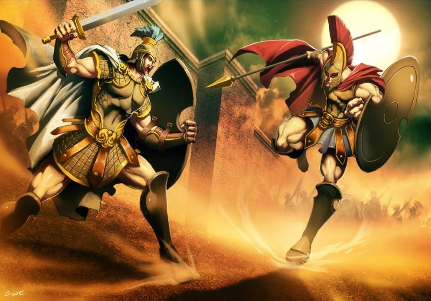

Mitologia Grega
As maiores histórias do secúlo passado

A Guerra dos Titãs

Titanomaquia: Como tudo começou
A história que leva à guerra dos Titãs começa quando Urano, que era a personificação do Céu, se casa com Gaia, a personificação da Terra.
Dessa união nascem 12 filhos, sendo 6 homens, que são os Titãs e 6 mulheres, que são as Titânides.
Gaia, cansada com toda essa situação, além do forte ciúme de Urano, instigou os filhos para que se revoltassem contra o pai.
De todos eles, Cronos foi o único que teve coragem de se opor a Urano. Sendo assim, conseguiu se libertar do ventre da mãe na hora em que ela e Urano estavam copulando e usou uma foice para extrair os órgãos genitais do pai.
Conta a história que ao tocar a Terra, o sangue de Urano gerou as montanhas, os mares, as florestas e também as Erínias, que eram a personificação da vingança. Além disso o seu esperma gerou Afrodite.
Depois de fazer isso, Cronos consegue libertas seus irmãos e se casa com uma delas, a Titânide Réia.
Um detalhe importante dessa história é que Gaia também profetizou que, assim como seu pai, o seu usurpador também seria destronado por um de seus filhos, repetindo a história em outra geração.
Essa profecia mexeu com Cronos e por isso ele exigia que os seus filhos fossem entregues a ele para que os devorassem.
Réia, sem muita opção, acaba entregando todos os filhos, exceto o último que era Zeus. No lugar do filho recém-nascido ela entrega uma pedra para que Cronos engula.
Há ainda uma outra versão; uma história que afirma que Reia também salva Poseidon e Hera, dando um potro para Cronos devorar no lugar do deus dos mares. Enquanto a Hera é deixada aos cuidados de Oceano, Tétis e das Horas.
De volta a Zeus, Réia o entrega para ser criado pelas ninfas, que são seres elementares.
Já crescido, Zeus arruma um disfarce e faz com que o pai tome uma poção e vomite todos os seus irmãos já adultos.
A batalha da Titanomaquia
É aqui que podemos dizer que a luta começa de fato, pois Zeus, sendo apoiado pelos irmãos, inicia uma grande guerra contra seu pai, Cronos, travando uma batalha que dura 10 longos anos.
Nessa guerra os deuses se colocaram no monte Olimpo, enquanto seus adversários, os titãs, ficaram no monte Ótris.
Hesíodo, poeta da antiguidade, descreve a luta como uma luz que faz confundir o céu e a terra em uma coisa só. Um tumulto tão grande da terra sendo esmagada e do céu se precipitando sobre ela. Era o barulho da luta dos deuses.
Continuando a descrever, Hesíodo ainda diz que os ventos se sacudiam e erguiam o pó ao mesmo tempo em que trovoes, raios e relâmpagos ardiam, pois eram as armas de Zeus que levavam os combatentes aos gritos.
Seguindo os acontecimentos, Zeus, do alto do monte Olimpo, disfere um raio contra os Titãs e faz com que a terra inteira trema.
De um lado estavam os gigantes hecatônquiros, libertados pelos deuses, que arrancavam as montanhas para arremessar contra os Titãs.
Do outro lado os Titãs lutavam e resistiam como podiam contra todos os deuses.

O fato é que a guerra estava levando os habitantes do Olimpo à vitória. Entretanto, como um de seus últimos recursos, os Titãs lançaram mão de uma nova arma diretamente das profundezas.
mitologia-grega-titanomaquia4É então que, saindo do tártaro, surge Tifão, criatura colossal dos ventos fortes que provoca Zeus para um último desafio antes que os deuses possam reinar no universo.
Tifão consegue escalar o Olimpo e provoca a fuga de todos os deuses, exceto Atena, que consegue contê-lo por algum tempo, enquanto Zeus e os outros se refugiam no Egito.
Finalmente o monstro colossal consegue alcançar Zeus e lhe arranca as pernas e braços, deixando-o totalmente debilitado.
Com um plano infalível e com a ajuda dos outros deuses, Zeus consegue recuperar seus músculos.
Muito tempo se passa na maior batalha de todos os tempos entre Zeus e Tifão, até que o deus dos deuses consegue concentrar toda a sua energia em um único ponto e lança um forte raio que atinge Tifão fazendo com que ele caia nas profundezas do tártaro novamente, levando os demais Titãs com ele.
Assim, vitoriosos, Zeus se torna o rei do universo e os deuses do Olimpo banem definitivamente os Titãs para o tártaro, juntamente com Érebo.
Os 12 Deuses olimpianos

Todos viviam no topo do Monte Olimpo e por isso, recebem esse nome. São eles: Zeus, Hera, Poseidon, Atena, Ares, Deméter, Apolo, Ártemis, Hefesto, Afrodite, Hermes e Dionísio. Em algumas versões, os nomes desses deuses podem variar, mas geralmente são esses que compõem o panteão. Quanto a isso, podemos citar Hades, deus do submundo, que por vezes é incluído como deus do Olimpo. Além dele, em algumas versões, Héstia, irmã de Zeus, é incluída também. Os deuses do Olimpo são considerados as principais divindades gregas. Ali, eles moravam juntos num imenso palácio e tinham alguns deuses que os serviam. Os alimentos que consumiam, os quais eram considerados divinos, eram a ambrosia e o néctar.
A guerra de Troia
A Guerra de Troia foi a mais famosa das guerras de toda a História. Opondo uma coalizão de gregos a troianos, a Guerra de Troia teria durado cerca de 10 anos, provavelmente no século XIII ou XII a.C. Não se sabe ao certo se a guerra realmente ocorreu ou se seria mais um dos inúmeros mitos da civilização grega. A Guerra de Troia teria se iniciado após uma viagem diplomática de Paris Alexandre e Heitor, filhos do rei de Troia, Príamo, a Esparta. Na famosa cidade grega, Paris teria conhecido Helena, mulher do rei espartano Menelau, famosa por sua beleza e por quem Paris imediatamente se apaixonou. Paris havia sido muito bem tratado por Menelau, mas em um momento de ausência do rei espartano, Paris envolveu-se com Helena e decidiu raptá-la, levando-a para Troia. A história de amor de Paris e Helena havia sido premeditada por Afrodite, deusa do amor e protetora de Paris. Ao descobrir o rapto, Menelau declarou guerra a Troia e tentou unificar as diversas tribos gregas contra os troianos. Troia localizava-se no Helesponto, na atual Turquia. Era uma grande cidade, cercada por uma intransponível muralha. O principal líder dos aqueus (como eram conhecidos os gregos à época) era Agamenon, irmão de Menelau. Mas o principal guerreiro aqueu era Aquiles, filho da ninfa Tétis e de Peleu, conhecido pela sua força, um guerreiro quase imbatível. Entretanto, Aquiles somente participou da Guerra de Troia após ser convencido por Odisseu (Ulisses), principalmente pela fama que a participação na guerra traria aos combatentes.
A principal fonte de informação da Guerra de Troia é o poema épico Ilíada, criado por Homero. A Guerra de Troia representou ainda o fim da era dos heróis, como Aquiles e Heitor, dando início posteriormente à era dos homens comuns. Muitos desses heróis morreram em combate ou tiveram sua volta para casa dificultada pelos deuses, como foi o caso de Odisseu, retratado por Homero na Odisseia.
A Ilíada iniciou-se no décimo ano das batalhas. Após diversas vitórias gregas, a sorte virou para os troianos quando Aquiles desentendeu-se com Agamenon sobre a distribuição dos saques que haviam sido realizados, principalmente uma sacerdotisa do templo de Apolo. Com a retirada de Aquiles dos combates, os troianos conseguiram importantes vitórias.
Entretanto, Pátroclo vestiu-se com a armadura de Aquiles, seu primo, e foi morto por Heitor. Com a morte de seu ente querido, Aquiles voltou à guerra, duelando com Heitor, filho do rei Príamo, e matando-o. Mesmo a superioridade conseguida pelos gregos com essa morte não possibilitou a eles entrarem na fortificada cidade.
Uma solução foi dada pelo astuto Odisseu. A ideia era criar um enorme cavalo de madeira que seria oferecido ao rei Príamo como presente indicando o fim da guerra. Mas dentro do famoso Cavalo de Troia ficariam os principais guerreiros gregos, sendo que a esquadra que estava ancorada próxima a Troia seria mudada de lugar, dando a impressão de retirada dos gregos.
Príamo aceitou o presente. Uma vez dentro da cidade, os gregos iniciaram sua destruição, saqueando-a e destruindo-a totalmente. Muitos foram mortos, como Aquiles, que, apesar de toda sua força, foi atingido em seu calcanhar por uma flecha envenenada lançada por Paris.
Com a entrada dos gregos na cidade e com sua destruição, teve fim a Guerra de Troia, a mais famosa da História.